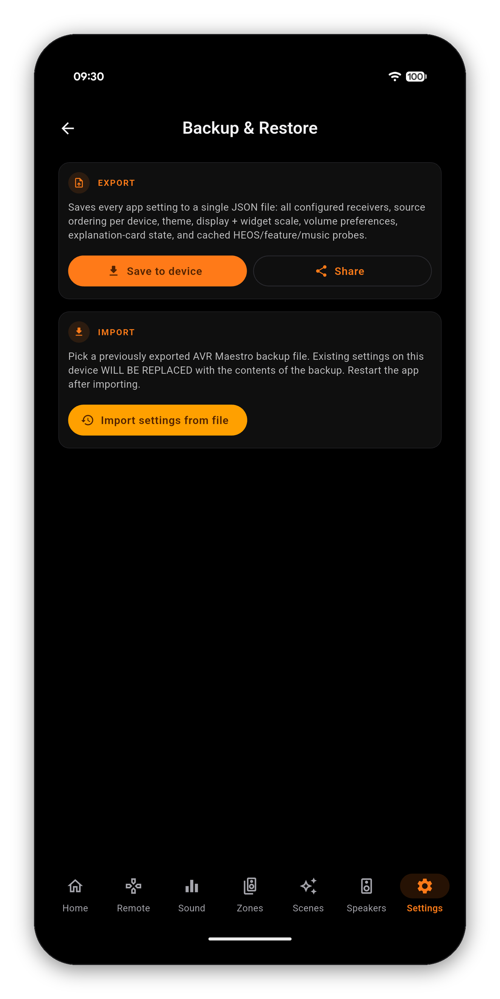

Renaming every input, picking artwork for each one, ordering your sources and building a set of Scenes is real work. It should survive a new phone, and it does: one export, one import, and the new device looks exactly like the old one.
Open Settings, scroll to Backup & Restore, and choose:
It is a plain text file. Nothing in it is locked to the device it came from.

| Included | Meaning |
|---|---|
| Configured receivers | Every device you have added, with its address and settings |
| Source ordering per device | The order you dragged your inputs into, kept per receiver |
| Theme and Color Theme | Your accent color and appearance choices |
| Display and widget scale | Text and widget sizing |
| Volume preferences | The app-side volume behavior |
| Explanation-card state | Which info banners you have dismissed, so they stay dismissed |
| Cached probes | The HEOS, feature and music capability results, so the new phone does not start from scratch |
Your calibration, Speaker Presets, levels, distances, crossovers and Dirac filters live on the receiver. They are not in the backup, and importing one cannot disturb them. That cuts both ways: a backup will not restore a receiver you have factory-reset, and it does not need to - reconnecting the app to that receiver picks its settings back up from the receiver itself.
It is also a reasonable thing to take before a big reorganization. Export, rearrange your inputs and rebuild your Scenes freely, and if you preferred it the old way the file is right there.
One-time purchase, no ads, no subscriptions. Connect in under a minute.